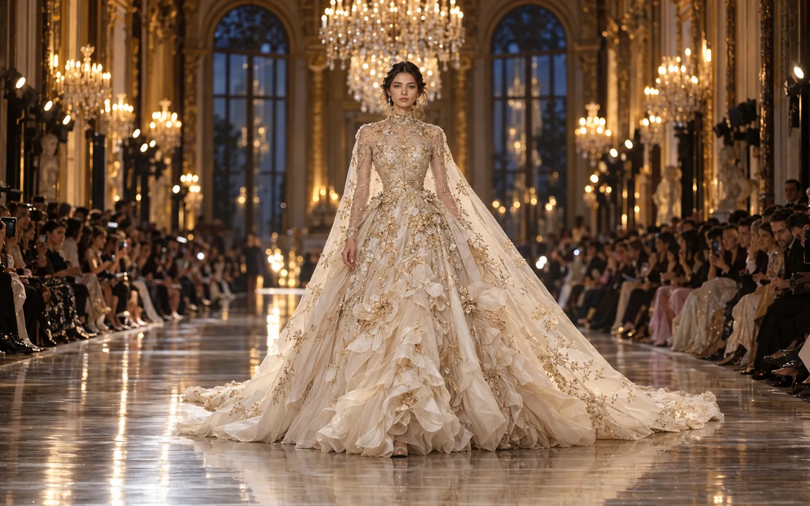
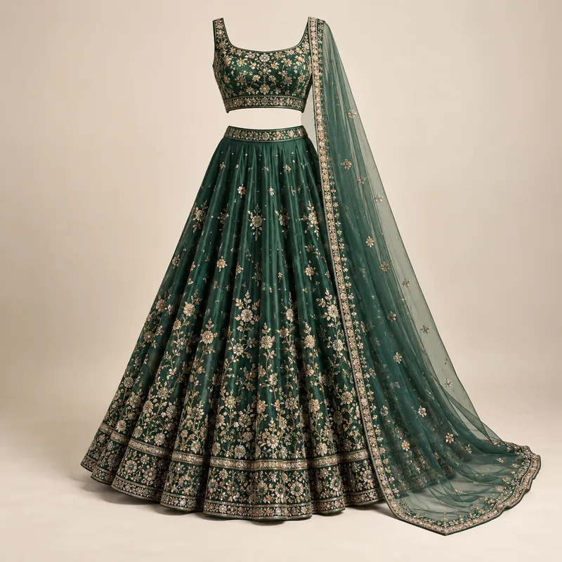
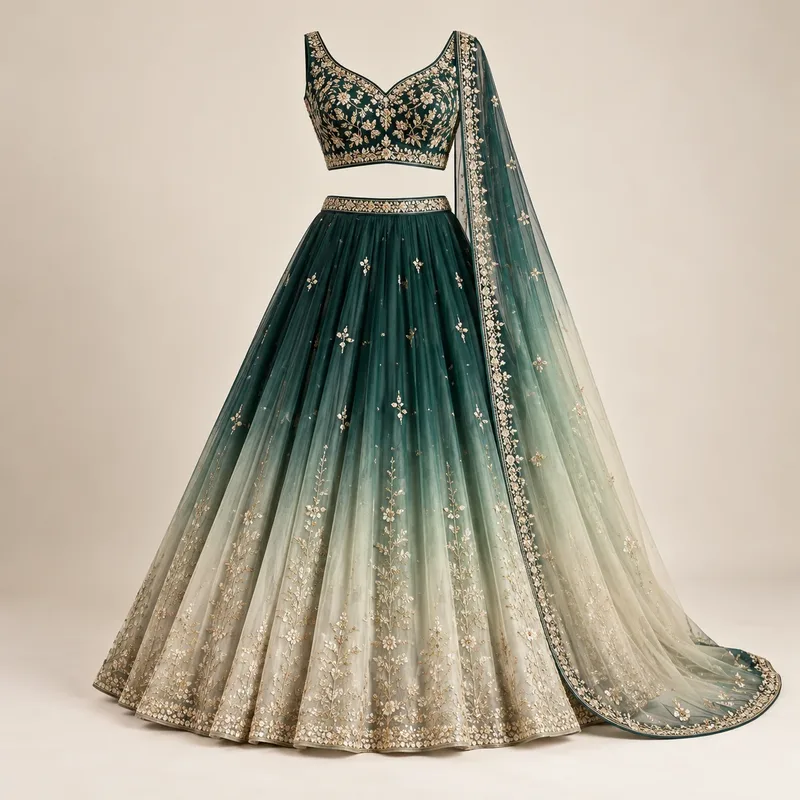

Couture
Couture: the world of made-to-measure
Couture is fashion at its most personal: one client, one body, hundreds of hours of hand work. Forecut explores couture worldwide, from the Paris haute couture calendar to Indian bridal ateliers, with the techniques, stories, news and innovations behind it.

Couture news
The latest from the world's couture runways, summarised by Forecut with links to the original coverage.
Manish Malhotra made his official Paris Haute Couture Week debut with "Maa", a tribute to his mother using chikankari, zardozi, resham and gota work. Rahul Mishra presented "Devi: The Eternal Muse", inspired by the Ajanta caves and temple carvings, in zardozi and dabka.
Source: Aza Fashions, FashionNetwork
The 6–9 July week saw Pierpaolo Piccioli's first couture collection for Balenciaga and Duran Lantink's first for Jean Paul Gaultier. Jonathan Anderson (Dior) and Matthieu Blazy (Chanel) showed their second couture collections, and Fendi presented couture in Rome.
Source: Wallpaper*, Aza Fashions
Iris van Herpen's "Sonic Starquakes" used more than 30,000 hand-blown glass bubbles on tulle, while Dior explored hand-pleated chiffon and sculptural bows: proof that innovation and craft now work together on the couture runway.
Source: Aza Fashions
Held 23–29 July and opening at Hyderabad's Taj Falaknuma Palace, the week highlighted ceremonial headpieces, sculptural corsets, jewellery built into garments, sculptural veils and a return of bridal reds, with many collections crediting their artisans.
Source: ETV Bharat, t2 Online


Couture around the world
Each couture capital has its own strengths, clients and craft.
The home of haute couture. Official couture houses show twice a year on the Paris Haute Couture Week calendar, run by the Fédération de la Haute Couture et de la Mode, alongside invited guest designers from around the world.
Italy's "alta moda" tradition centres on Rome, with a focus on eveningwear, fine tailoring and Italian craft workshops. Some Italian houses present couture in Rome rather than Paris.
Known for bespoke tailoring on Savile Row, couture millinery and an independent design scene that increasingly shows sculptural eveningwear in Paris.
Red-carpet and gala dressing, bridal couture and made-to-order eveningwear for private clients and events.
Beirut and Dubai are major centres for couture eveningwear and bridal, with Lebanese designers among the best-known names on the Paris calendar.
Bridal and occasion couture built on the world's richest embroidery traditions. India Couture Week is the main showcase, and Indian couturiers now present in Paris too.
Designers from China, Japan, Singapore and Vietnam bring sculptural eveningwear, technical innovation and their own craft heritage to couture, often as guests in Paris.
The couture calendar
When couture is shown and when demand peaks. Dates vary by year.
Explore couture wear
The full scope of couture, from red-carpet gowns to kids' occasion wear.
Column gowns, ball gowns and draped dresses built on inner corsetry, with embroidery planned to catch the light.
White and ivory gowns, veils and capes in silk, tulle and lace, made over multiple fittings.
Lehengas, sarees and gowns with zardozi, resham and gota work; reds are returning alongside pastels.
Shorter or lighter couture for parties and receptions: sculptural minis, draped saree gowns and embellished jackets.
Savile Row-style bespoke suits, tuxedos, sherwanis and bandhgalas, cut to the individual.
Mini lehengas, sherwanis and party dresses with soft linings and secure, light embellishment.
Headpieces, veils, millinery, embroidered bags and shoes that complete the look; ceremonial headpieces were a key couture statement in 2026.
Made-to-order pieces from a set design with limited customisation: couture craft at a more accessible level.
Three ateliers: women, men and kids
What defines each, and where it is heading.

Womenswear couture
Bridal and occasion wear is the heart of Indian couture: lehengas, sarees and gowns built to measure, with embroidery planned around the wearer's body and the way the garment will move.
- Lighter lehengas in organza and tissue, built on cancan for volume without weight
- Cape and jacket layers over lehengas and saree gowns
- Tone-on-tone embroidery and pastel-to-jewel ombré
- Corsetry and structured bodices borrowed from Western couture

Menswear couture
Menswear couture is about cut first and ornament second: the sherwani, bandhgala and achkan are tailored garments, and their luxury lives in the canvas, the shoulder and the finishing.
- Ivory and pastel sherwanis with tone-on-tone thread work
- Velvet and brocade bandhgalas for winter weddings
- Collar brooches, chain details and embroidered cuffs
- Fluid draped menswear: dhoti pants, drape kurtas and stoles

Kidswear couture
Children's couture follows the family wedding: mini lehengas, sherwanis and kurta sets that echo the adult looks. The rules are different: comfort, soft linings and lighter embellishment come first.
- Matching family looks in a shared colour story
- Soft cotton or silk linings, no scratchy seams or loose beads
- Adjustable waists and room for growth
- Lightweight embroidery and secure, child-safe trims
Couture themes for the coming wedding seasons
Forecut's story directions for bridal and occasion couture, 2026–27.
Vintage textiles, a grandmother's saree or old zari borders are cut into new silhouettes. The story is continuity: the bride wears her family's history in a modern shape.
Gold moves from all-over to placed: borders, necklines and cuffs in antique zari on ivory, sage and powder blue. Luxury reads as restraint.
Three-dimensional flowers, hand-cut organza petals and thread-work vines grow over the garment like a garden. Colour is soft; texture does the talking.
Sculpted capes, pleated volumes and corseted bodices give occasion wear a strong, modern line. Embroidery follows the structure instead of covering it.
Deep emerald, sapphire and wine velvet with crystal and resham work for evening receptions and winter weddings.
Couture techniques
The hand techniques behind couture, from Indian embroidery to Paris atelier crafts.
Metal-wrapped threads, coils and sequins couched by hand onto the cloth for raised, jewel-like ornament.
A hooked needle forms fine chain stitches from the surface on a frame, fast and precise for dense florals.
Delicate white-on-white shadow and knot work from Lucknow, traditionally on fine cotton and muslin.
Ribbon of gold or silver appliquéd and folded into shapes, a Rajasthani technique for borders and motifs.
Small mirrors held in place by a ring of stitches, from Gujarat, Rajasthan and Sindh.
Silk-thread embroidery, from fine satin stitch to long-and-short shading.
Coiled metal wire and twisted threads used for raised outlines and filigree effects.
Running-stitch quilting and embroidery from Bengal and Odisha, now used as surface texture.
Hand-cut and shaped petals layered onto tulle or organza for sculptural flowers.
Fabric shaped directly on the form, or permanently pleated, to create volume without seams.
Boned inner structures that shape the bodice and carry the weight of heavy skirts.
Beads, sequins and crystals applied by hand or with a tambour hook, planned for weight and movement.
Feathers cut, curled and dyed by hand and applied piece by piece for movement and texture.
Chantilly, Alençon and guipure laces, cut around motifs and appliquéd invisibly onto tulle.
Petals cut, shaped with heated tools and assembled by hand into three-dimensional flowers.
Fabric pleated or gathered by hand into textured panels that hold their shape.
Hand-drafted patterns, canvassed fronts and hand-padded lapels shaped to one client over several fittings.
New innovations
How the atelier is changing.
Organza, tulle and tissue replace heavy brocades; volume comes from cancan and structure, not fabric weight.
Motifs are planned on screen and placed on the pattern before hand work starts, so ornament follows the body exactly.
Printed or laser-cut elements are combined with hand embroidery for sculptural detail.
Archive fabrics and family textiles are reworked into new pieces, giving couture a sustainability story.
Occasion couture is increasingly designed to be re-styled, altered and worn again.
Couture articles & storytelling
Guides and analysis from the Forecut editorial team.


